Water Pump Assembly (2GR-FE) Installation |
| 1. Install Water Pump Assembly |
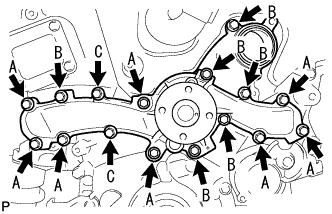 |
Install the water pump assembly with a new gasket and the 16 bolts.
| 2. Install Water Pump Pulley |
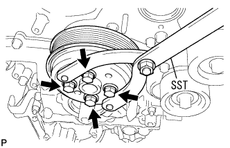 |
Temporarily install the water pump pulley with the 4 bolts.
Using SST, hold the water pump pulley.
Fully tighten the 4 bolts.
| 3. Install Water Inlet Housing |
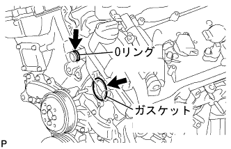 |
Install new water inlet housing gasket No.1 and a new O-ring.
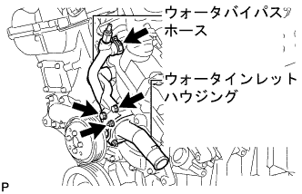 |
Install the water inlet housing with the 2 bolts and nut.
Connect the water bypass hose.
| 4. Install Engine Mounting Bracket Front NO.1 LH |
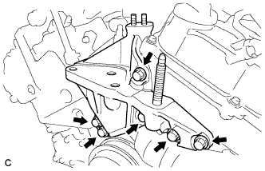 |
Install engine mounting bracket front NO.1 LH to the engine assembly with the 6 bolts.
| 5. Install Water Pump Pulley |
 |
Temporarily install the water pump pulley with the 4 bolts.
Using SST, hold the water pump pulley.
Fully tighten the 4 bolts.
| 6. Install V-ribbed Belt Tensioner Assembly |
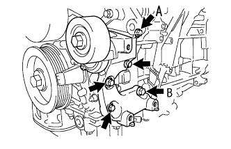 |
Temporarily install the V-belt tensioner assembly.
Tighten bolts A and B.
Tighten the remaining bolts.
| 7. Install Cooler Compressor w/ Magnetic Clutch Assembly |
 |
Install the cooler compressor w/ magnetic clutch assembly with the 4 bolts in the order shown in the illustration.
| 8. Install Idler Pulley Sub-assembly NO.2 |
 |
Install idler pulley No.2 and cover plate No.2 with the bolt.
| 9. Install Engine Hangers |
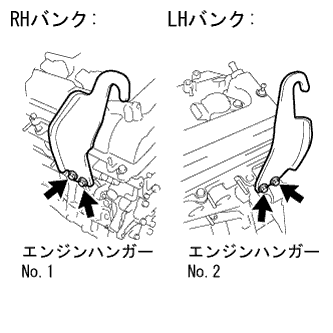 |
Install the engine hangers in the positions shown in the illustration.
Using an engine sling device and chain block, hold the engine.
| 10. Remove Engine Stand |
Using an engine sling device and chain block, hold the engine.
Remove the engine assembly from the engine stand.
| 11. Install Drive Plate & Ring Gear Sub-assembly |
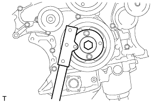 |
Using SST, hold the crankshaft.
Degrease and clean the bolts and threads.
Apply adhesive 1324 to 2-3 threads from the tip of the bolts.
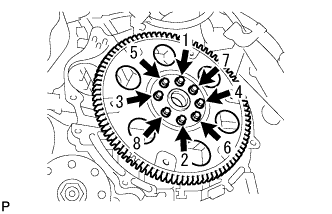 |
Tighten the bolts in the order shown in the illustration.
| 12. Install Automatic Transaxle Assembly |
Check that there are 2 knock pins on the engine side.
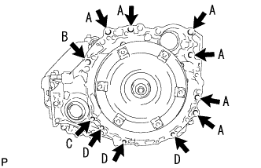 |
With the engine and transaxle level, align the knock pins with the knock pin holes, and tighten the 11 bolts in the positions shown in the illustration.
Clean the installation holes for the converter set bolts of the torque converter.
Apply adhesive 1324 to the 6 set bolts.
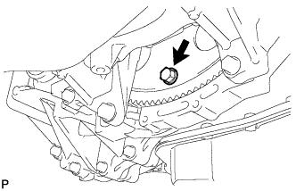 |
Tighten the 6 torque converter set bolts.
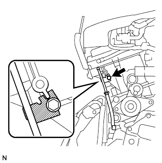 |
Install the transmission breather pipe to the engine cylinder head with the bolt.
| 13. Install Flywheel Housing Under Cover |
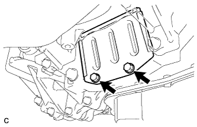 |
Install the flywheel housing under cover with the 2 bolts.
| 14. Install Exhaust Pipe Support Bracket NO.1 |
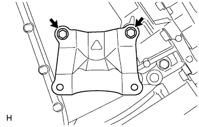 |
Install exhaust pipe support bracket No.1 with the 2 bolts.
| 15. Install Starter Assembly |
 |
Install the starter assembly with the 2 bolts (B in the illustration).
Install the wire harness clamp bracket with the bolt (A in the illustration).
Connect terminal B with the nut.
Install the terminal cap cover.
Connect the connector.
| 16. Install Drive Shaft Bearing Bracket |
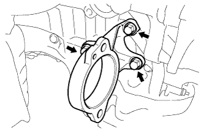 |
Install the drive shaft bearing bracket with the 3 bolts.
| 17. Install Engine Mounting Bracket Rear |
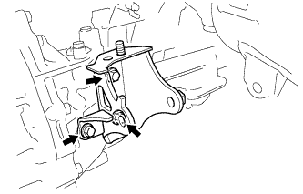 |
Install the engine mounting bracket rear with the 3 bolts.
| 18. Install Manifold Stay |
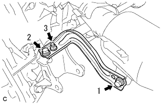 |
Install the manifold stay with the 2 bolts and nut.
Tighten the bolt and nut in the order shown in the illustration.
| 19. Install Engine Mounting Bracket Front |
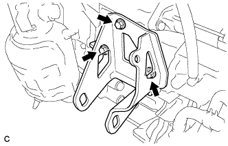 |
Install the engine mounting bracket front with the 3 bolts.
 |
Install the oil cooler tube with the bolt.
| 20. Install Engine Wire |
| 21. Remove Engine Hangers |
Remove the engine hangers from the engine assembly.
| 22. Install Engine Assembly w/ Transaxle |
 |
Set the engine assembly w/ transaxle on the engine lifter.
Operate the engine lifter and install the engine assembly w/ transaxle to the vehicle.
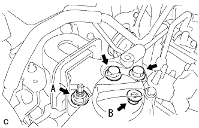 |
Install the engine mounting insulator RH to the engine mounting bracket RH with the bolt and 2 nuts.
 |
Install the engine mounting insulator LH to the engine mounting bracket LH with the bolt and nut.
| 23. Install Front Suspension Crossmember Sub-assembly |
Operate the engine lifter and temporarily install the front suspension crossmember and front suspension member braces RH and LH to the vehicle with the 8 bolts.
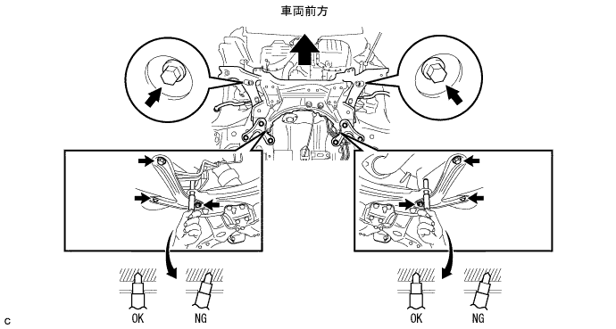
Align the position while alternately inserting SST into the reference holes on the RH and LH sides of the front suspension crossmember, and tighten the RH and LH side bolts to the specified torque in several steps.
| 24. Install Front Crossmember Sub-assembly |
 |
Install the front crossmember to the vehicle with the 4 bolts.
| 25. Install Front Suspension Member Reinforcement LH |
 |
Install the front suspension member reinforcement LH with the 4 bolts.
| 26. Install Front Suspension Member Reinforcement RH |
 |
Install the front suspension member reinforcement RH with the 4 bolts.
| 27. Connect Engine Mounting Insulator RR |
 |
Install the engine mounting insulator RR to the engine mounting bracket RR with the bolt.
| 28. Connect Engine Mounting Insulator FR |
 |
Install the engine mounting insulator FR to the engine mounting bracket FR with the bolt and nut.
| 29. Install Front Drive Shaft Assembly LH |
 |
Apply Toyota Genuine ATF WS to the splines of the inboard joint assembly LH.
Face the snap ring opening downward.
Align the splines of the drive shaft and transaxle, and insert the drive shaft assembly LH using a brass bar and hammer.
| 30. Install Front Drive Shaft Assembly RH |
 |
Apply Toyota Genuine ATF WS to the splines of the inboard joint assembly RH.
Align the splines of the drive shaft and transaxle, insert the drive shaft assembly, and tighten it with the 2 bolts.
| 31. Install Front Axle Assembly LH |
Push the front axle assembly LH toward the outside of the vehicle, align the splines of the front drive shaft assembly LH with the front axle assembly LH, and insert it.
| 32. Install Front Axle Assembly RH |
| 33. Install Front Suspension Arm Sub-assembly Lower NO.1 LH |
 |
Push down the front suspension lower arm No.1 LH, install the front lower ball joint LH, and tighten it with the 1 bolts and 2 nuts.
| 34. Install Front Suspension Arm Sub-assembly Lower NO.1 RH |
| 35. Install Front Stabilizer Link Assembly LH |
 |
Install the front stabilizer link assembly to the shock absorber assembly with the nut.
| 36. Install Front Stabilizer Link Assembly RH |
| 37. Install Tie Rod End LH |
 |
Connect the tie rod end LH to the steering knuckle and install it with the castle nut.
Install a new cotter pin.
| 38. Install Tie Rod End RH |
| 39. Install Speed Sensor Front LH |
Install the speed sensor to the steering knuckle with bolt C.
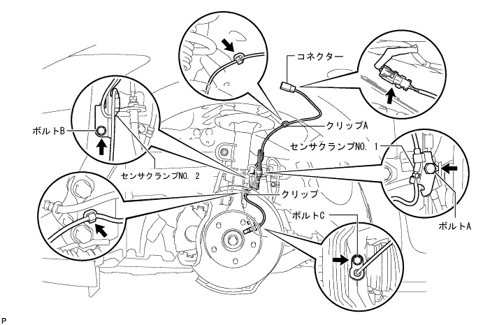
Install the clip to the steering knuckle.
Using bolt A, install sensor clamp No.1 together with the brake flexible hose to the shock absorber.
Install sensor clamp No.2 to the body with bolt B.
Connect the connector.
Install the speed sensor clip to the body.
| 40. Install Speed Sensor Front RH |
| 41. Install Front Axle Shaft Nut LH |
Using white gasoline, clean the threads of the drive shaft and axle shaft nut.
Using a socket wrench (30mm), install a new front axle hub nut LH.
 |
Using a chisel and hammer, stake the front axle hub nut LH.
| 42. Install Front Axle Shaft Nut RH |
| 43. Connect Transmission Control Cable Assembly (Rear Side Installation Position) |
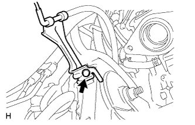 |
Install the transmission control cable support to the engine mounting insulator RR with the bolt.
| 44. Install Exhaust Pipe Assembly Front |
 |
Install the front exhaust pipe assembly with a new gasket and 2 nuts.
 |
Install the exhaust pipe bracket with 2 bolts.
 |
Using SST, install the oxygen sensor and connect the oxygen sensor connector.
| 45. Install Exhaust Pipe Assembly Center |
 |
Install the exhaust center pipe assembly with 2 new gaskets, 2 nuts and 2 bolts.
 |
Before installing the oxygen sensor body, twist it approximately 4 turns as shown in the illustration, then install it.
 |
Using SST, install the oxygen sensor.
| 46. Connect Fuel Main Tube |
 |
Push in the fuel tube until a click sound is heard.
 |
Install the EFI fuel pipe clamp No.1.
| 47. Install Suction Hose Sub-assembly |
 |
Remove the vinyl tape wrapped around the connecting part of the suction hose.
Sufficiently apply compressor oil (ND-OIL8) to a new O-ring and the fitting surfaces of the cooler compressor w/ magnetic clutch assembly.
Install the O-ring to the suction hose.
Install the suction hose to the cooler compressor w/ magnetic clutch assembly with the bolt.
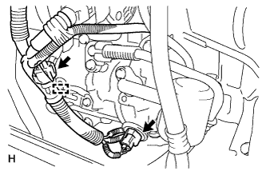 |
Engage the clamp.
Connect the connectors.
| 48. Install Discharge Hose Sub-assembly |
 |
Remove the vinyl tape wrapped around the connecting part of the discharge hose.
Sufficiently apply compressor oil (ND-OIL8) to a new O-ring and the fitting surfaces of the cooler compressor w/ magnetic clutch assembly.
Install the O-ring to the discharge hose.
Install the discharge hose to the cooler compressor w/ magnetic clutch assembly with the bolt.
| 49. Install Radiator Reserve Tank Assembly |
 |
Install the radiator reserve tank assembly with the 2 bolts.
| 50. Install Radiator Assembly |
 |
Install the 2 radiator support lower cushions.
Install the radiator assembly together with the fan shroud to the vehicle.
Install the cooler condenser assembly to the fan shroud.
| 51. Connect Water Bypass Hose |
 |
Connect water bypass hose No.1 and water bypass hose No.3 with the 2 clamps.
| 52. Connect Radiator Hose NO.2 |
 |
Connect radiator hose NO.2 with the clamp.
| 53. Connect Radiator Hose NO.1 |
 |
Connect radiator hose NO.1 with the clamp.
| 54. Connect Oil Cooler Outlet Hose NO.1 |
 |
Connect oil cooler outlet hose No.1 with the clamp.
| 55. Connect Oil Cooler Inlet Hose NO.1 |
 |
Connect oil cooler inlet hose No.1 with the clamp.
| 56. Connect Thermistor Assembly |
 |
Install the thermistor assembly with the clip.
| 57. Connect Wire Harness |
 |
Connect the cooling fan motor connector and 2 wire harness clamps.
| 58. Install Fan Shroud NO.2 |
 |
Install fan shroud No.2 to the radiator assembly with the 2 bolts.
Attach the 2 horn assembly connectors to fan shroud No.2 with the 2 clamps.
| 59. Install Radiator Support Assembly |
 |
Install the radiator support assembly with the 4 bolts.
 |
Connect the 2 horn assembly connectors.
| 60. Install Radiator Support Cushion |
Install the 2 radiator support cushions to fan shroud NO.2.
| 61. Install Radiator Support Upper |
Install the radiator support upper to the radiator support assembly with the bolt.
| 62. Install Hood Lock Assembly |
 |
Install the hood lock assembly with the 3 bolts.
 |
Attach the hood lock control cable assembly to the 2 clamps.
| 63. Connect Water Bypass Hose NO.2 |
 |
Install the water bypass hose to the radiator support assembly with the 2 bolts and 2 clamps.
| 64. Install Radiator Side Cover RH |
 |
Install the radiator side cover RH with the 2 clamps.
| 65. Install Radiator Side Deflector LH |
 |
Install the radiator side cover LH with the 3 clamps and guide.
| 66. Millimeter Wave Radar Sensor Bracket NO.1 Removal (w/ Cruise Control (w/ Radar Cruise)) |
 |
Temporarily install the millimeter wave radar sensor bracket with the 4 bolts.
Fully tighten the bolts in the order A, B, C, D.
| 67. Millimeter Wave Radar Sensor Assembly Installation (w/ Cruise Control (w/ Radar Cruise)) |
 |
Temporarily install the millimeter wave radar sensor assembly with the 3 bolts.
Fully tighten the bolts in the order A, B, C.
Connect the connector.
| 68. Install Front Bumper Assembly |
Connect the connectors.
 |
Engage the 8 claws (4 each on LH/RH).
 |
Install the front bumper assembly with the 5 clips, 2 bolts and 6 screws.
 |
Install the pin hold clip.
| 69. Install Radiator Grille Protector |
 |
Install the 2 radiator grille protectors.
| 70. Connect Engine Wire |
 |
Install the 2 bolts and 2 clamps, and connect the ground wire.
 |
Install the bolt and clamp, and connect the ground wire.
 |
Install the clamp and connect the engine control computer connector.
 |
Install the 4 connectors, 2 claws and 2 nuts, and connect the engine wire to the engine room relay block.
Install relay block cover upper NO.1 to the engine room relay block.
| 71. Connect Heater Water Outlet Hose |
 |
Connect the heater water outlet hose with the clamp.
| 72. Connect Heater Water Inlet Hose A |
 |
Connect the heater water inlet hose with the clamp.
| 73. Fill Automatic Transaxle Fluid |
Vehicle Condition Check
Work Content Check
Refer to the work flow below and follow the procedure.

If a large amount of fluid is to be added, go to step [*1]
If a small amount of fluid is to be added, go to step [*2]
Add fluid (when a large amount of fluid is to be added) [*1]
Keeping the vehicle level, lift it up.
Remove engine under cover NO.1.
Remove the engine under cover rear LH.
 |
Using a socket hexagon wrench 6, remove the overflow plug and gasket.
Remove the refill plug and gasket.
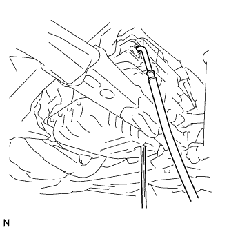 |
Add fluid through the refill hole until fluid flows out of the overflow.
 |
Using a socket hexagon wrench 6, temporarily tighten the overflow plug with the gasket.
Add the specified amount of fluid through the refill hole.
| Related Work | Refill Amount (Reference) |
|---|---|
| When removing/installing the oil pan or drive shaft, or replacing an oil seal | 2.8L |
| When removing/installing the torque converter assembly | 4.8L |
| When the transaxle assembly has been replaced (new torque converter assembly used) | 5.3L |
| When the transaxle assembly has been replaced (torque converter assembly reused) | 3.4L |
 |
Temporarily tighten the refill plug with the gasket.
Lower the vehicle.
Go to Oil Temperature Detection Mode Switching (When Terminal TC Is Shorted) [*3]
Go to Oil Temperature Detection Mode Switching (When Using SST (TaSCAN)) [*4]
Add fluid (when a small amount of fluid is to be added) [*2]
Keeping the vehicle level, lift it up.
Remove engine under cover NO.1.
Remove the engine under cover rear LH.
|
Remove the refill plug and gasket.
Add the specified amount of fluid through the refill hole.
| Related Work | Refill Amount (Reference) |
|---|---|
| When the oil cooler and cooler hoses have been removed | 0.5L |
| When oil seepage, etc. has been repaired | 0.5L |
|
Temporarily tighten the refill plug with the gasket.
Lower the vehicle.
Go to Oil Temperature Detection Mode Switching (When Terminal TC Is Shorted) [*3]
Go to Oil Temperature Detection Mode Switching (When Using SST (TaSCAN)) [*4]
Switch to fluid temperature detection mode (when shorting TC terminal) [*3]
Turn IG ON.
Turn the A/C OFF.
Turn IG OFF.
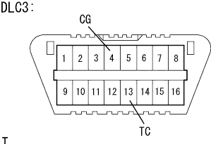 |
Using SST, connect terminals 13 (TC) and 4 (CG) of DLC3.
Start the engine.
Slowly move the shift lever from the P range to the D range, and then shift back to the P range.
 |
Switch to oil temperature detection mode.
| Oil Temperature Detection Mode Switching Procedure |
|---|
| Perform the N - D operation within 1.5 seconds |
| Perform the above operation continuously for 6 seconds or more |
 |
The meter indicator light [D] illuminates for 2 seconds and then goes off.
 |
Depending on the fluid temperature, the meter indicator light comes on, goes off or blinks.
Adjust fluid temperature (when shorting TC terminal) [*4]
Move the shift lever to the P range.
Disconnect terminals 13 (TC) ←→ 4 (CG) of DLC3.
Warm up the engine at idle to raise the automatic transaxle fluid temperature.
|
As soon as the meter indicator light [D] illuminates, lift up the vehicle.
Go to Fluid Level Check [*7]
Switch to fluid temperature detection mode (when using SST (TaSCAN)) [*5]
Connect SST (TaSCAN) to DLC3.
Start the engine with the A/C OFF.
Select Active Test (TC terminal ON), and turn the TC terminal ON with the A/T fluid temperature displayed.
Slowly move the shift lever from the P range to the D range, and then shift back to the P range.
|
Switch to oil temperature detection mode.
| Oil Temperature Detection Mode Switching Procedure |
|---|
| Perform the N - D operation within 1.5 seconds |
| Perform the above operation continuously for 6 seconds or more |
|
The meter indicator light [D] illuminates for 2 seconds and then goes off.
|
Depending on the fluid temperature, the meter indicator light comes on, goes off or blinks.
Adjust fluid temperature (when using SST (TaSCAN)) [*6]
Move the shift lever to the P range.
Turn the TC terminal from ON to OFF.
Warm up the engine at idle to raise the automatic transaxle fluid temperature.
|
As soon as the meter indicator light [D] illuminates, lift up the vehicle.
Go to Fluid Level Check [*7]
Check fluid level [*7]
|
Using a socket hexagon wrench 6, remove the overflow plug and gasket.
Check the fluid condition.
If fluid overflows, go to step [*8]
If fluid does not overflow, go to step [*9]
Adjust fluid level (when fluid overflows) [*8]
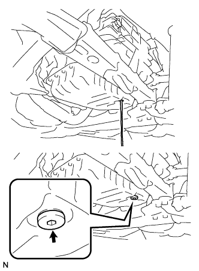 |
When the fluid flow becomes a trickle, fully tighten the overflow plug with a new gasket.
|
Fully tighten the refill plug with a new gasket.
Install the engine under cover rear LH.
Install engine under cover NO.1.
Lower the vehicle.
Turn IG OFF and disconnect SST (TaSCAN).
Refill fluid (when fluid does not overflow) [*9]
|
Remove the refill plug and gasket.
Add fluid through the refill hole until fluid flows out of the overflow.
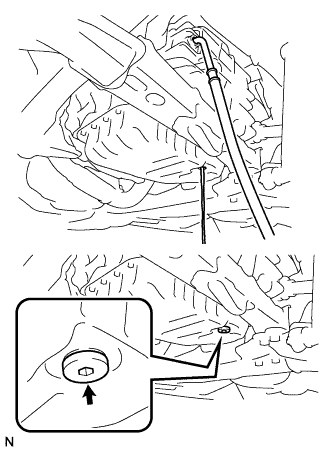 |
When the fluid flow becomes a trickle, fully tighten the overflow plug with a new gasket.
|
Fully tighten the refill plug with a new gasket.
Install the engine under cover rear LH.
Install engine under cover NO.1.
Lower the vehicle.
Turn IG OFF and disconnect SST (TaSCAN).
| 74. Add Coolant (Toyota Genuine Super Long Life Coolant) |
Close the radiator drain cock plug.
Close the cylinder block drain cock plug.
 |
Fill coolant of the specified concentration up to the B line of the radiator reserve tank.
After installing the reservoir tank cap, warm up the engine until the thermostat opens. (A)
After warm-up, repeat the cycle of 3000rpm engine speed for 5 seconds ←→ idling for 45 seconds 8 times or more (7 minutes or more). (B)
Stop the engine and wait until the coolant cools down, and if the level is below LOW, add coolant of the specified concentration through the filler again and adjust it to between FULL and LOW. (C)
Repeat steps (A) to (C) until the coolant level in the radiator reservoir tank stops dropping.
When the level stops dropping, add coolant of the specified concentration through the filler again to adjust the coolant level in the radiator reservoir tank to between FULL and LOW.
| 75. Fill Engine Oil |
| 76. Install Fan & Alternator V Belt |
 |
Install the belt onto each pulley as shown in the illustration.
 |
Put a tool on the pulley set bolt of the tensioner, turn the tensioner counterclockwise, remove the hexagon wrench, and install the belt.
 |
Check that the belt is correctly installed on each pulley.
Start the engine and check that the belt rotates smoothly without abnormal noise.
| 77. Connect Steering Column Hole Cover Sub-assembly NO.1 |
 |
Insert clip A, hook clip B onto the top surface of the panel, and connect the steering column hole cover to the floor panel.
| 78. Connect Steering Intermediate Shaft Assembly NO.2 |
 |
Align the matchmarks and connect steering intermediate shaft assembly No.2 to the steering intermediate shaft.
 |
Install the bolt.
| 79. Install Column Hole Cover Silencer Sheet |
 |
Install the column hole cover silencer sheet with the 2 clips.
Put the floor carpet back in place.
| 80. Connect Check Valve to Connector Tube Hose |
 |
Connect the union to connector tube hose with the clamp.
| 81. Install Transmission Control Cable Assembly |
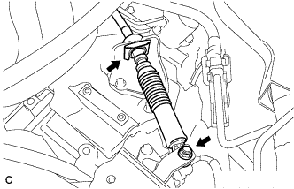 |
Install the transmission control cable assembly with a new clip and nut.
| 82. Install Air Cleaner Case |
 |
Install the air cleaner case with the 3 bolts.
Connect the clamp.
| 83. Install Air Cleaner Filter Element Sub-assembly |
Install the air cleaner filter element.
| 84. Install Air Cleaner Cap w/ Air Cleaner Hose |
 |
Install the hinge portion first, and then install the air cleaner cap w/ air cleaner hose with the 3 clamps.
Install the clamp hose band. (*1)
Connect ventilation hose No.2. (*2)
Connect the air flow meter connector. (*3)
| 85. Connect Fuel Vapor Feed Hose NO.1 |
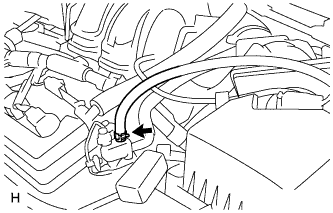 |
Connect fuel vapor feed hose No.1 with the clamp.
| 86. Install Cowl Top Panel Outer |
 |
Install the cowl top panel outer with the 8 bolts.
 |
Bend the heater air duct splash shield seal No.2 and water guard plate RH as shown in the illustration, and engage each clamp.
 |
Engage the windshield deicer wire harness connector and 3 clamps, and attach them to the cowl top panel outer. (w/ Cold Area Specification)
| 87. Install Cowl Body Mounting Reinforcement RH |
 |
Install the cowl body mounting reinforcement RH to the cowl top panel outer with the 3 bolts.
| 88. Install Windshield Wiper Motor & Link Assembly |
 |
Install the windshield wiper motor & link assembly with the 2 bolts.
Connect the connector.
| 89. Install Cowl Top Ventilator Louver RH |
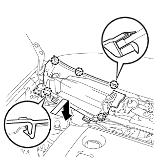 |
Engage the 5 claws and install the cowl top ventilator louver RH as shown in the illustration.
| 90. Install Front Side Panel Protector NO.1 RH |
 |
Engage the pin and install the front side panel protector NO.1 RH.
| 91. Install Cowl Top Ventilator Louver LH |
 |
Engage the 11 claws and install the cowl top ventilator louver LH as shown in the illustration.
| 92. Install Front Side Panel Protector NO.1 LH |
 |
Engage the pin and install the front side panel protector NO.1 LH.
| 93. Install Hood to Cowl Top Seal |
 |
Engage the 7 clips and install the hood to cowl top seal.
| 94. Install Front Wiper Arm & Blade Assembly LH |
 |
Stop the windshield wiper motor assembly at the automatic stop position.
Using a round file or equivalent, clean the wiper arm serrations. (When reassembling)
Using a wire brush, clean the wiper pivot serrations.
 |
Install the front wiper arm & blade assembly LH with the front wiper arm nut so that it is in the position shown in the illustration.
| 95. Install Front Wiper Arm & Blade Assembly RH |
 |
Using a round file or equivalent, clean the wiper arm serrations. (When reassembling)
Using a wire brush, clean the wiper pivot serrations.
 |
Install the front wiper arm & blade assembly RH with the front wiper arm nut so that it is in the position shown in the illustration.
Operate the front wipers while spraying water or washer fluid on the glass, and check the wiping condition of the blades and that they do not interfere with the body.
| 96. Install Front Wiper Arm Head Cap |
 |
Install the 2 front wiper arm head caps.
| 97. Install Engine Mounting Stay NO.2 RH (RH Side Installation Position) |
 |
Install engine mounting stay No.2 RH with the bolt and 2 nuts.
| 98. Install Battery Carrier NO.2 |
 |
Install battery carrier NO.2 with the 2 bolts.
| 99. Install Battery Carrier |
 |
Install the battery carrier with the 4 bolts.
Attach the 2 clamps to the battery carrier.
Install the battery tray.
| 100. Install Battery |
Install the battery to the vehicle
Install the insulator.
 |
Connect the current sensor connector.
 |
Install the battery clamp with the bolt and nut.
Connect the battery positive terminal with the nut.
| 101. Install Front Tire |
| 102. Check Front Wheels Straight-ahead Position |
| 103. Connect Battery Negative Terminal |
| 104. Inspect for Fuel Leaks |
Fuel Pump Operation Check
Connect SST (TaSCAN) to DLC3.
Operate according to the screen display, select 'Active Test' - 'Circuit Relay' - 'ON', and check the fuel pump operation.
Fuel Leak Inspection
Check that there are no fuel leaks in the fuel system while fuel pressure is applied.
| 105. Charge Refrigerant HFC-134a (R134a) |
Evacuate the system using a vacuum pump.
Charge with refrigerant HFC-134a (R134a).

| 106. Inspect for Coolant (Toyota Genuine Super Long Life Coolant) Leaks |
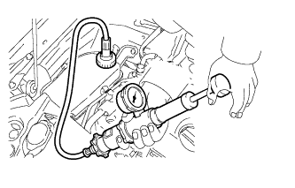 |
Fill the radiator with coolant and install a radiator cap tester.
Warm up the engine.
118kPa{1.2kgf/cm2Pump it to } and check that the pressure does not drop.
| 107. Inspect for Automatic Transaxle Fluid Leaks |
| 108. Inspect for Engine Oil Leaks |
| 109. Inspect for Refrigerant Gas Leaks |
After charging the refrigerant gas, inspect for refrigerant gas leaks using a halogen leak detector.
| 110. Inspect for Exhaust Gas Leaks |
Check that there are no exhaust gas leaks from the locations shown in the illustration (exhaust pipe joints and each sensor installation area).

| 111. Install Engine Under Cover Rear RH |
Install the engine under cover rear RH with the 5 clips.
| 112. Install Engine Under Cover Rear LH |
Install the engine under cover rear LH with the 5 clips.
| 113. Install Engine Under Cover NO.2 |
Install engine under cover NO.2 with the 5 clips.
| 114. Install Engine Under Cover |
Install the engine under cover with the 4 bolts and 4 screws.
| 115. Install Engine Under Cover NO.1 |
Install engine under cover NO.1 with the 6 bolts and 7 clips.
| 116. Install V-bank Cover Sub-assembly |
 |
Engage the 3 clips to install the V-bank cover.
| 117. Install Radiator Upper Air Deflector |
 |
Install the radiator upper air deflector with the 9 clips.
| 118. Inspect Shift Lever Position |
Turn IG ON and depress the brake pedal.
When shifting the shift lever to each position, check that the shift lever operates smoothly, moves into each position with a positive feel, and the position indicator shows the position correctly.
Start the engine, and check that the vehicle moves forward when shifting from the N position to the D position, and moves backward when shifting to the R position.
| 119. Adjust Shift Lever Position |
Apply the parking brake and move the shift lever to the N position.
Remove the instrument panel finish panel lower.
(see)
 |
Disconnect the cable end from the shift lock control unit.
 |
Using a thin-bladed screwdriver, pull out the stopper of the transmission control cable, turn the nut approximately 180° counterclockwise, and while holding the nut, disconnect the transmission control cable from the shift lever retainer.
 |
While pushing the claw of the lock piece, hold down the claw on the back side and push up the lock piece from the back side.
Turn the nut of the transmission control cable 180° counterclockwise, and while holding the nut, push in the stopper until it clicks 2 time.
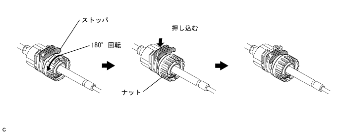
Install the cable outer of the transmission control cable to the shift lever retainer, check that the spring is at position A as shown in the illustration, and push in the stopper.
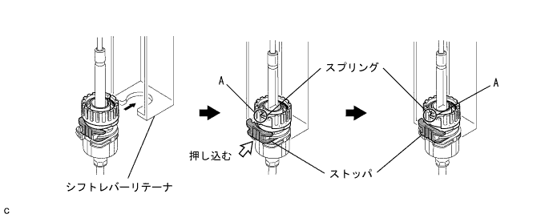
 |
Install the cable end to the shift control unit.
 |
Push the lock piece into the adjuster case to lock it.
After adjustment, inspect the operation, and if there is a problem, adjust again.
Install the instrument panel finish panel lower.
(see)
| 120. Inspect and Adjust Front Wheel Alignment |
)| 121. Inspect Ignition Timing |
Inspection Using SST (TaSCAN)
Connect SST (TaSCAN) to DLC3.
Following the screen instructions, display the "ECU Data Monitor" - "Ignition Timing #1" screen and measure the ignition timing.
Display the "Active Test" screen, select "Ignition Timing #1", and measure the ignition timing with "TC Terminal ON".
Check that the ignition timing advances quickly when the engine speed is increased.
Inspection using general instruments
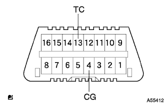 |
Using SST (diagnosis check wire No.2), connect between terminals 13 (TC) ←→ 4 (CG) of the DLC3.
Remove the cowl top outside front w/ front wiper motor & link. (see)
Remove the V-bank cover.
Connect the clip of the timing light to the wire harness for the coil connector of cylinder No.1.
Check that the ignition timing is within the standard.
Disconnect terminals 13 (TC) ←→ 4 (CG) of the DLC3.
Check that the ignition timing is within the standard.
Check that the ignition timing advances quickly when the engine speed is increased.
Remove the timing light.
Install the V-bank cover.
Install the cowl top outside front w/ front wiper motor & link. (see)
| 122. Inspect Idle Speed |
Inspect the idle speed. (see)
| 123. Inspect CO, HC Concentration |
After maintaining the engine speed at 2500r/min for 2 minutes, inspect the CO and HC concentration at idle.
| 124. Inspect Engine Oil Level |
Warm up and stop the engine; after 5 minutes, check that the oil level is between the L and F marks on the oil level gauge. If the oil level is low, check for leaks and add oil up to the F mark.
| 125. Perform Test Mode Inspection (Speed Sensor System) |
)| 126. Initialize TaSCAN-AT Learned Values |
)| 127. Setting Procedure When Disconnecting/Reconnecting Battery Terminal |
)| 128. Millimeter Wave Radar Sensor Assembly Adjustment |
 |
Pre-adjustment Work
Unload all luggage from the vehicle.
Leave only the standard tools and spare tire in the trunk.
Adjust the tire pressure to the specified value.
Reduce the remaining fuel to less than 15L.
Vertical Adjustment
Remove dust and oil from the level shelf of the millimeter wave radar sensor assembly.
 |
Place the dedicated level in the center of the level shelf of the millimeter wave radar sensor assembly.
 |
Using a screwdriver, turn vertical adjusting bolt A of the millimeter wave radar sensor assembly to adjust so that the bubble is on the red line of the level.
| Vertical Adjustment |
| 1 turn of the screwdriver moves it approximately 0.12° |
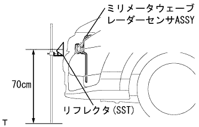 |
SST (Reflector) Height Adjustment
Set SST (reflector) at a height of 70cm from the ground.
SST (Reflector) Setting
Hang a pointed weight from the center (emblem center) of the front and rear bumpers of the vehicle, and accurately mark the center positions on the floor surface.
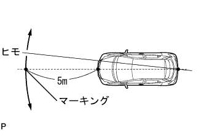 |
Make a mark 5m ahead of the vehicle on the line connecting the 2 front and rear points.
Set SST (reflector) at a position shifted 12mm to the right of the vehicle from the marking position.
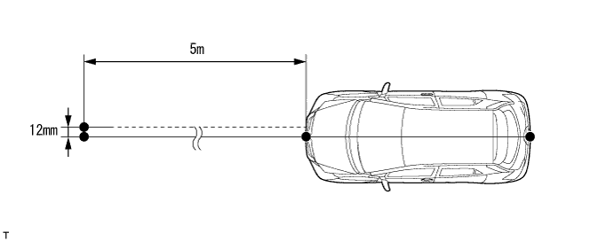
Beam Axis Adjustment
Connect SST (TaSCAN) to the vehicle.
Turn IG ON.
Turn the cruise control main switch ON.
 |
On the screen, select "Work Support" → "Radar Cruise" → "Millimeter Wave Radar Beam Axis Adjustment" in that order.
Follow the screen instructions and press the "Start" button.
Horizontal Adjustment
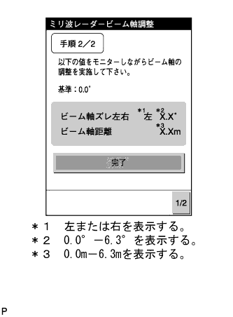 |
Read the current angle deviation.
 |
Based on the beam axis deviation measurement result, use a screwdriver to turn horizontal adjusting bolt B of the millimeter wave radar sensor assembly to adjust it.
| Horizontal Adjustment |
| 1 turn of the screwdriver moves it approximately 0.05° |
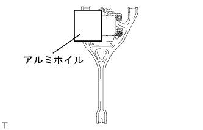 |
To reset the driving learned value, cover the left half of the sensor with aluminum foil, etc. (a metal object that blocks radio waves). (For approximately 10 seconds)
 |
Press the "Complete" button to end the beam axis adjustment mode.
Disconnect SST (TaSCAN) from the vehicle.
Recheck Vertical Adjustment
|
Place the dedicated level in the center of the level shelf of the millimeter wave radar sensor assembly.
|
Using a screwdriver, turn vertical adjusting bolt A of the millimeter wave radar sensor assembly to readjust so that the bubble is on the red line of the level.
| Vertical Adjustment |
| 1 turn of the screwdriver moves it approximately 0.12° |